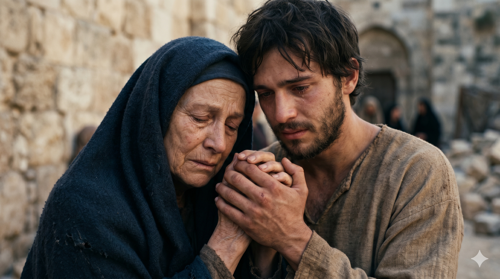

골고다 언덕 십자가 아래, 마리아와 요한이 나란히 서 있는 장면. 제자들이 다 흩어진 자리에서 요한 홀로 어머니를 붙들고 십자가를 올려다보는 숙연한 장면.
예수의 십자가 곁에는 그 어머니와 이모와 글로바의 아내 마리아와 막달라 마리아가 섰는지라. 예수께서 자기의 어머니와 사랑하시는 제자가 곁에 서 있는 것을 보시고 자기 어머니께 말씀하시되 여자여 보소서 아들이니이다 하시고. 또 그 제자에게 이르시되 보라 네 어머니라 하신대 그 때부터 그 제자가 자기 집에 모시니라. — 요한복음 19:25-27
예수님이 십자가에 달리신 그 자리, 골고다 언덕에 제자들은 대부분 두려워 도망쳤습니다. 그러나 요한은 그 자리에 있었습니다. 베드로도 없고, 다른 제자들도 없는 자리에, 젊은 요한이 마리아 곁에 서 있었습니다. "사랑하시는 제자"라는 표현은 요한복음에서 요한이 자신을 가리키는 독특한 방식입니다. 그 표현 속에는 겸손과 감격이 함께 담겨 있습니다. 나는 특별한 사람이 아니라, 다만 주님이 사랑하시는 자였다는 고백입니다. 그가 그 자리에 있을 수 있었던 이유는 바로 이 사랑의 감각, 사랑받고 있다는 확신이었을 것입니다.
십자가 위의 예수님은 극심한 고통 중에서도 어머니 마리아를 바라보셨습니다. 그리고 요한에게 "보라 네 어머니라"고 말씀하셨습니다. 이것은 단순한 부탁이 아니었습니다. 마리아에게는 새 아들이 주어졌고, 요한에게는 새 어머니가 주어졌습니다. 예수님은 죽어 가시면서도 새로운 가족 공동체를 창설하셨습니다. 그 날 이후 요한은 마리아를 자기 집에 모셨다고 기록합니다. 신앙 공동체는 혈연을 넘어선 새로운 가족입니다. 요한이 그 첫 모델이 되었습니다. 사랑으로 머무는 사람에게, 주님은 더 큰 사명을 맡기십니다.

예수님의 말씀 후 요한이 마리아의 손을 꼭 잡고 고개를 숙이는 장면. 어머니와 아들로 새롭게 맺어진 두 사람의 조용한 연대.
요한이 그 자리에 있을 수 있었던 것은, 두려움보다 사랑이 컸기 때문입니다. 다른 제자들은 두려워 흩어졌지만, 요한은 주님 곁에 머물렀습니다. 우리 신앙도 마찬가지입니다. 어려운 시간, 고통스러운 자리에 머무는 것이 진짜 사랑입니다. 십자가 아래는 영광의 자리가 아니었습니다. 위험하고 슬프고 아무 보상도 없는 자리였습니다. 그러나 요한은 그 자리를 지켰고, 그 자리에서 주님의 가장 깊은 신뢰를 받았습니다. 당신이 지키고 있는 자리, 남들이 떠난 그 자리가 어쩌면 주님이 당신을 신뢰하시는 자리일 수 있습니다.
또한 이 본문은 예수님의 공동체 이해를 보여 줍니다. 주님은 혈연 가족만을 가족으로 보시지 않았습니다. 사랑으로 맺어진 관계, 함께 머무는 관계, 서로를 돌보는 관계가 하나님 나라의 가족입니다. 교회 안에서 외로운 분들, 가족이 없는 분들을 볼 때 우리는 요한처럼 "보라 네 어머니라"는 말씀을 기억해야 합니다. 신앙 공동체는 새로운 가족이 되어야 합니다. 사랑으로 머무는 것이 그 첫걸음입니다.
모두 떠난 자리에 머무는 사람이 있었습니다.
주님은 그에게 어머니를 맡기셨습니다.
당신이 지키는 그 자리, 주님은 알고 계십니다.